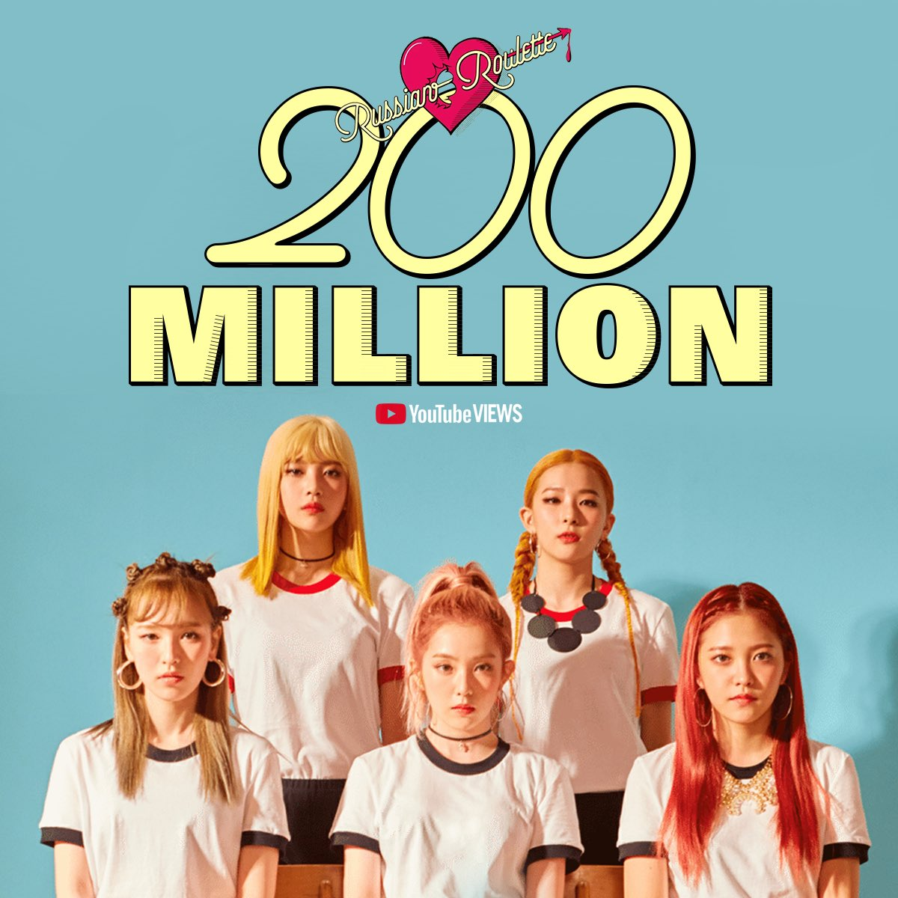

El video musical del grupo de SM para "Russian Roulette" superó 200 millones de visitas en YouTube aproximadamente a las 4:21 p.m. KST el 15 de abril. Esto es aproximadamente cuatro años, siete meses, ocho días y 16 horas desde su lanzamiento el 7 de septiembre de 2016 a las 12 a.m. KST. "Russian Roulette" es el tercer video musical de Red Velvet en alcanzar la marca después de "Bad Boy" y "Psycho".
